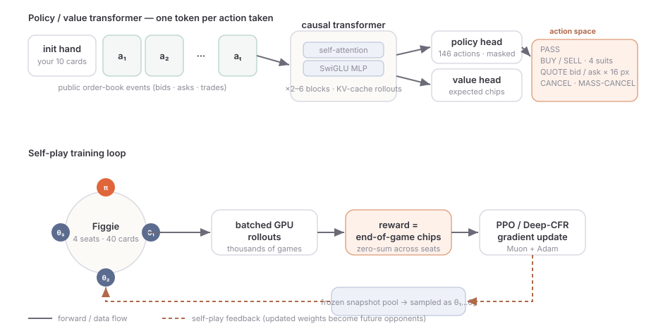

I tried to build a superhuman Figgie bot
I wanted to build a superhuman Figgie bot. Not a decent one — a genuinely scary one, the kind that sits down at Jane Street's little trading game and quietly takes everyone's chips. This is the build log of that attempt: the idea, the things I tried, the one that worked, the one that fought me, and an honest accounting of how far I actually got. (Spoiler, so you can calibrate: not superhuman yet — but further than I expected, and I think I can see the rest of the road.)
Why Figgie? Because it's a beautiful target. Four players, a rigged 40-card deck, an open order book, and one hidden fact — the goal suit — that nobody is told but everybody can infer from the cards in their hand. You buy, sell, and post quotes in real time, and when the round ends the players holding the most of the goal suit split a pot. It's poker for people who like market microstructure: a tiny, fully-specified rulebook, a brutal amount of hidden information, and a reward you can compute exactly (chips at the end). If you wanted to hand-design an RL playground, it would look a lot like this.
My one rule for myself: no human games, no hand-written strategy. The bot would have to learn everything — the inference, the trading, the bluffing — by playing millions of games against copies of itself. The whole thing lives in FiggieRL; what follows is the order I actually tried things in. (If you want the algorithms below built up from first principles, I wrote a companion explainer — policy gradients all the way to PPO, GRPO and CFR, derived on this exact game.)
1Know the game, and pick something to beat
Before you can build something superhuman you need to know what "human" even means here, so let me get the rules out of the way and then nail down two opponents to measure against.
The deck is deliberately lopsided. Of the four suits, one is the common suit with 12 cards, two have 10, and one has only 8. The goal suit is always the same-colour partner of the 12-card common suit — spades↔clubs, diamonds↔hearts — and you are never told which it is. At the end, everyone earns 10 chips per goal card they hold, and whoever holds the most splits a bonus pot (100 chips, or 120 when the goal happens to be the rare 8-card suit). Each player antes 50 to play.
Here is the whole game in one move: you can't see the goal suit, but you can see your own ten cards, and that is a surprisingly strong signal — pointing the wrong way. If you were dealt a lot of one suit, that suit is probably the 12-card common one, which means its partner is the goal. The suit you have the most of is the suit you should suspect least. A careful player computes, from their hand, the posterior probability that each suit is the goal, turns that into a fair value per card, and trades toward it.
I needed yardsticks — something concrete to point the bot at — so I wrote two reference opponents from scratch:
- Random — picks uniformly among legal non-pass moves. The floor. If my bot can't beat this, nothing else matters.
- Tom — a Bayesian heuristic that computes the fair value above, hits any quote that crosses it by a margin, and otherwise posts tight quotes around fair value. Not optimal, but it plays the inference — it's roughly "a competent human who knows the trick." Beating Tom is the first sign of real skill.
So here's my mental scoreboard for the whole project. Beat Random = the bot understands that cards have value. Beat Tom = it has learned the actual inference and can trade on it. Beat Tom by a lot, and stay unbeatable when opponents adapt = the superhuman dream. Everything below is me climbing that ladder.
2Attempt 0: make Figgie speak transformer
Before any learning could happen I had to decide how the bot even sees the game. A game of Figgie is a sequence of events: a deal, then a stream of public actions — someone posts a bid, someone lifts an offer, a trade prints. That is already shaped like language, so I treated it like one. Each player sees a token stream: the first token encodes their private opening hand, and every subsequent token encodes one public order-book event. A causal transformer (pre-norm self-attention interleaved with SwiGLU MLP blocks) reads the stream and, at each step, emits two things: a distribution over the next action and a scalar estimate of how many chips the player expects to walk away with.
The action space is a flat menu of 146 discrete moves: pass; buy or sell each of the four suits at the current best quote; post a bid or an ask for a suit at one of 16 discrete price levels; cancel a resting quote; or mass-cancel. Illegal moves (selling a card you don't hold, quoting through your own resting order) are removed with an action mask before the softmax, so the policy only ever spends probability on legal actions.

3The engine: self-play on the GPU, against your own ghosts
With the encoding settled, I needed a way to generate experience. My self-imposed rule — no human games — means the agent learns purely from itself. The core loop: take the current policy, seat it at a table with three opponents drawn from a pool of frozen past snapshots of itself, play a huge batch of games, and update on the results. Sampling old snapshots rather than always playing the very latest weights is the standard trick to keep self-play from chasing its own tail into a degenerate strategy — you have to stay good against a distribution of past selves, not just today's.
The reward is simply the chips you finish with, which makes the game (nearly) zero-sum across the four seats. To make millions of games affordable, the whole environment is re-implemented as a batched, vectorised engine that steps thousands of games at once on the GPU, with a KV-cache so each agent move is a single-token forward pass rather than a re-encode of the whole history. A readable single-game CPU implementation is kept alongside it purely as the reference oracle for tests.
4Attempt 1: PPO, the workhorse — and the first real milestone
For the first serious attempt I reached for the boring, reliable option: PPO (clipped policy-gradient with GAE), the workhorse of single-agent RL, pointed at the self-play loop. It is technically the "wrong" tool — Figgie is an imperfect-information game and PPO has no special machinery for that — but it's robust and I wanted a signal that the whole pipeline worked before getting fancy.
It worked better than I had any right to expect. Within minutes the bot blew past Random, and — the moment I'd actually been waiting for — it kept climbing and crossed Tom, the Bayesian heuristic, into positive territory: my best PPO runs finish at roughly +12 to +27 chips per game against Tom and as much as +74 against Random. A from-scratch transformer, fed nothing but chips, had reinvented the §1 inference well enough to out-trade a hand-written player that knows the trick. That's milestone one on the ladder, and it felt great.
So why not just declare victory and scale PPO up? Because "beats Tom by +20" is a long way from superhuman. PPO self-play has a known failure mode in these games: it can settle into a strategy that's good on average but exploitable — beatable by an opponent that adapts specifically to it. To chase the unbeatable version, I wanted the algorithm that was actually designed for hidden-information games. Which brings me to the part that humbled me.
5Attempt 2: Deep CFR, reaching for "unexploitable"
Deep CFR is the deep-learning descendant of counterfactual regret minimisation — the algorithm family that solved heads-up poker. Unlike PPO it comes with a convergence story toward a Nash-ish, hard-to-exploit strategy, which is exactly the property I want for a superhuman bot. On paper it's the right tool. In practice it spent a while reminding me that "on paper" does a lot of work.
The first CFR run literally scored worse than Random — the regret targets exploded and the policy diverged. Getting it to even train took a checklist of fixes: scaling the reward down, clipping regrets and gradients to sane ranges, and forcing a healthy exploration floor so the strategy networks saw enough of the game. Only after all that did it start behaving.
And once it behaved, it learned — just not far enough, yet. Over ~12k steps (about 27 minutes on one GPU) it climbs to a solid +25 to +30 chips against Random and holds there, while against Tom it claws upward from about −58 to the −30s but never crosses zero. So my fancier, theoretically-better attempt currently sits behind my boring one. That's the honest state of things.
The reassuring part: this isn't a broken-self-play problem, it's a not-done-yet problem. The training health looks fine — mean reward sits near zero (as it should in a zero-sum game against your own snapshots) and the win rate climbs past the 0.25 line that four equal players start at, up to ~0.37, so the live policy really is outgrowing its frozen ghosts. The huge reward variance (a single deal swings ±60 chips) is just the cost of a card game, and the reason every update digests thousands of games.
6So… am I superhuman yet?
No. But here's the scoreboard, honestly tallied. Positive vs-Random means "better than a random player"; positive vs-Tom means "better than a competent Bayesian human-ish player":
| agent | vs Random (best) | vs Tom (best) | win rate | verdict |
|---|---|---|---|---|
| Random | 0 (by def.) | — | 0.25 | the floor |
| Tom (heuristic) | — | 0 (by def.) | — | the bar |
| PPO self-play | +74.0 | +12 to +27 | — | clears the bar ✓ |
| Deep-CFR self-play | +31.5 | −31.7 | 0.37 | beats floor, chasing bar |
What I've actually got is a bot that convincingly beats a random player and out-trades a solid heuristic, learned entirely from self-play with no human games — which honestly delights me — and a clear, unfinished road to "superhuman" from here. The §1 inference, the thing that is Figgie, emerged from chips alone. That's the headline I'm keeping.
7What I'm trying next
The road to superhuman, as I currently see it:
- Let Deep CFR cook. Longer runs with the stabilisers properly tuned, to see whether its unexploitability story finally overtakes PPO once it has the time poker-scale CFR usually needs.
- Harden against exploitation. A bigger, more diverse opponent pool — and ideally an explicit exploitability check — so "wins on average" becomes "can't be picked apart by an adapting opponent."
- Open the hood. Probe the value head to see whether the transformer has genuinely reconstructed the goal-suit posterior internally, or is winning via some shortcut that merely correlates with it. That tells me whether I'm building a trader or a lookup table.
- Then, the real test: put it in front of strong human Figgie players and find out how much of "beats my heuristic" survives contact with people who bluff back.
Reproducibility. Everything is from-scratch PyTorch: a causal transformer (pre-norm attention + SwiGLU) with a masked 146-action policy head and a scalar value head, trained by self-play with a frozen snapshot pool, optimised with Muon + Adam. The batched GPU engine vectorises thousands of Figgie games at once; a readable single-game CPU implementation serves as the test oracle. Two reference opponents — uniform-Random and a Bayesian-fair-value heuristic (Tom) — are the benchmarks; scores are mean chips per game. Curves are read directly from the experiments' TensorBoard logs (Deep-CFR run cfr_run2_fixed, 12k steps; legacy PPO run v29); the fair-value figure is computed from the game's exact deal prior. Each run is fully specified by a config.json that re-creates its architecture and every hyperparameter.